Sprint 3
Instalacio LDAP
Preparatius
Ubuntu 24 (sebidor)
Tot servidor té per a tindre la IP fitxa aniria bé configura netplan però para passa del pas u farem en interfície
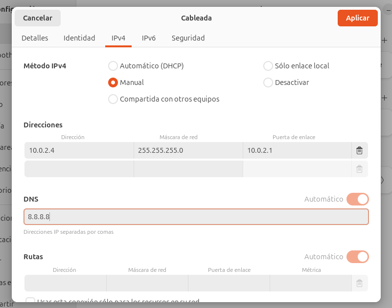
/etc/hostname: Defineix el nom del sistema com "alexcaballe". 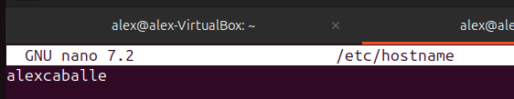
/etc/hosts: Assigna noms de domini a IPs locals(Aquesta configuració permet resoldre el nom de l'equip sense necessitat de DNS extern.) 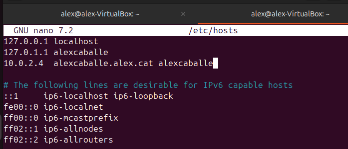
Per a fer la base del nostre domini tenim dos opcion o feru pels arxius base o a través de una comanda natros u farem per comanda
Aquí veurem la configuració que he aplicat al servidor LDAP. 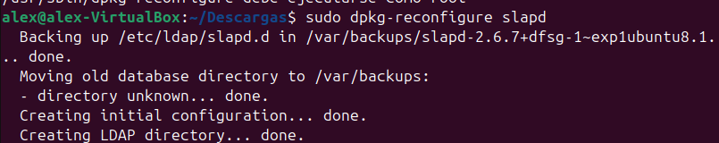
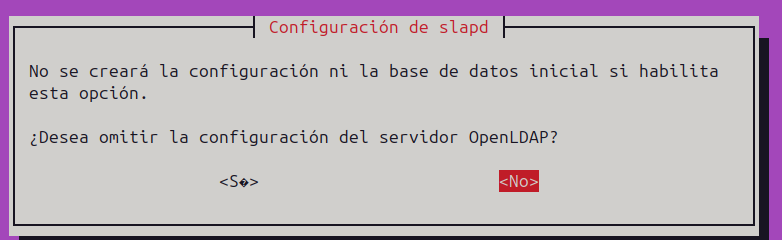
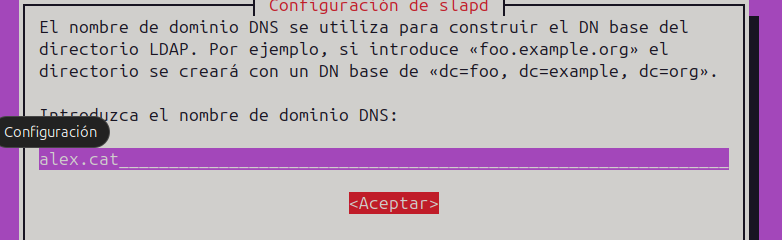
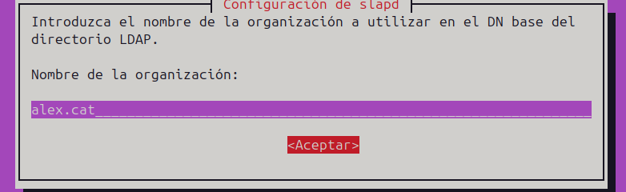
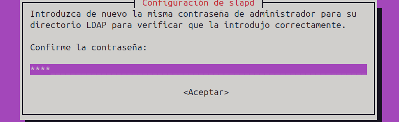
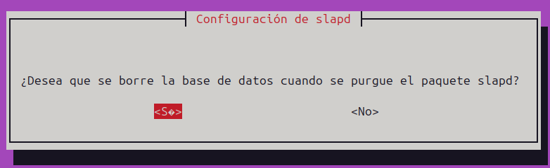
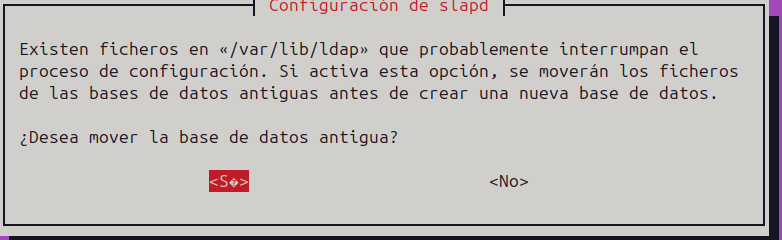
En aquesta comanda veurem el contingut actual 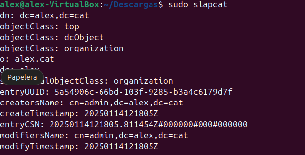
Gestió d’usuaris i grups
Usarem els fitxes prefets pera a crear els grups i usuaris 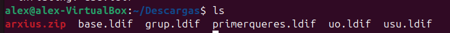
En les següents dues captures adapto els fitxes al meu domini 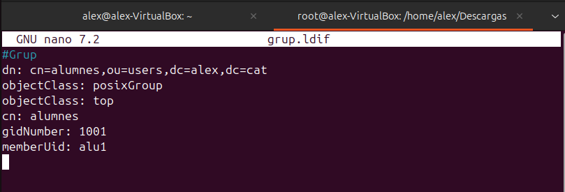
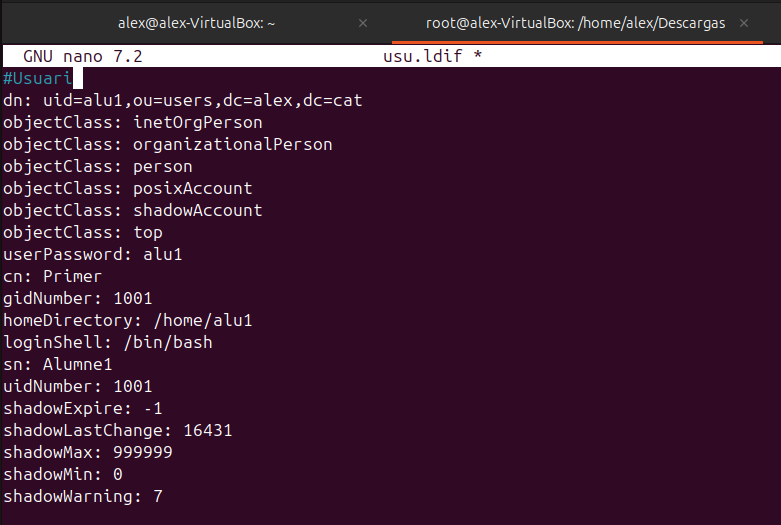

-c: Continua el procés encara que hi hagi errors.-x: Utilitza autenticació simple (no SASL).-D: Especifica el DN de l'usuari administrador.-W: Demana la contrasenya de manera interactiva.-f: Indica el fitxer LDIF amb les dades a afegir.
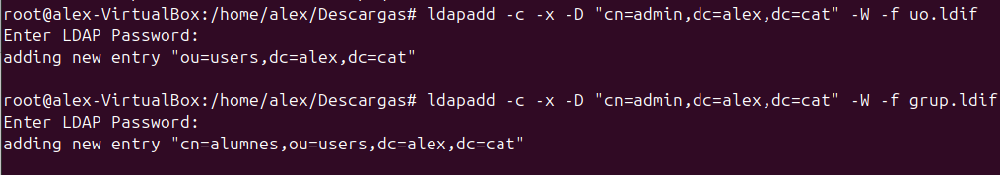
I aquí un apartat posterior a la configuració 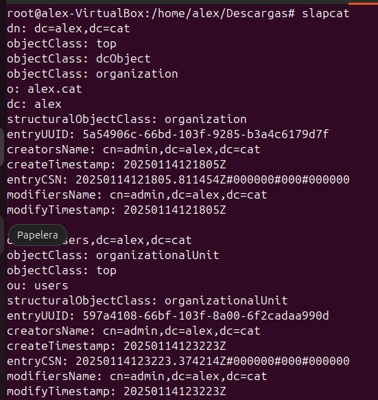
Unir equips al domini
Instal·lació de nscd 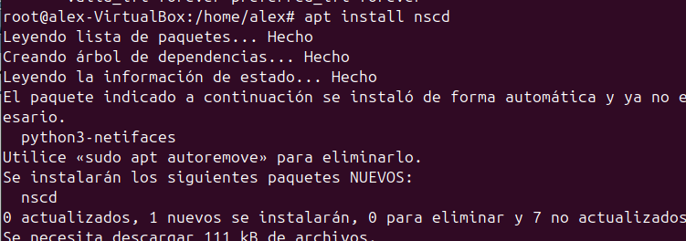
Configuració de ldap-auth-config
Posarem la IP del servidor LDAP. 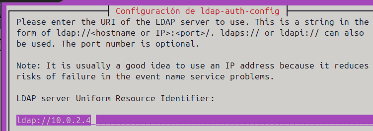
Proporcionarem el nom del domini 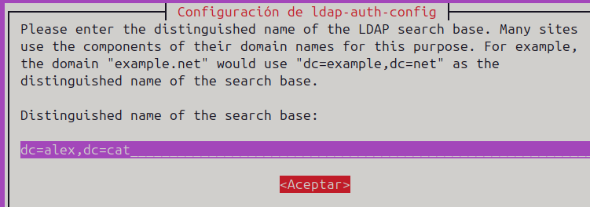
I la quenta que usarem 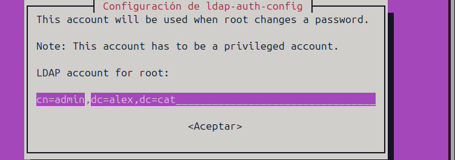
Instal·larem aquest paquet para que el sistema Linux s'autentifique mediant-te un servidor LDAP 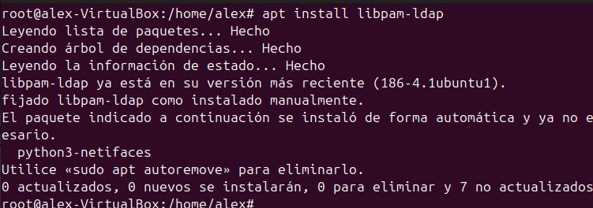
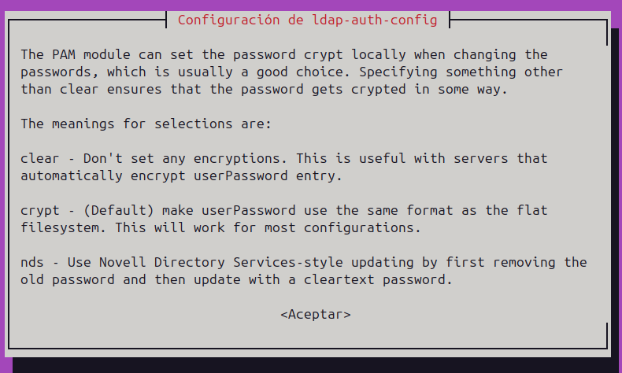
Si lo client no se valida sa de fe un reconfigure del paquet anterior
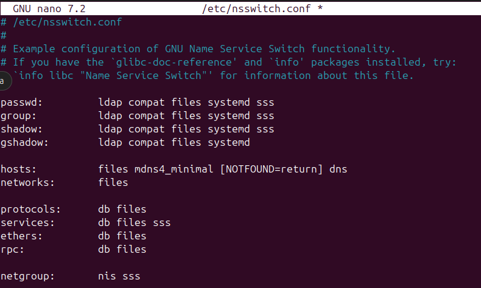
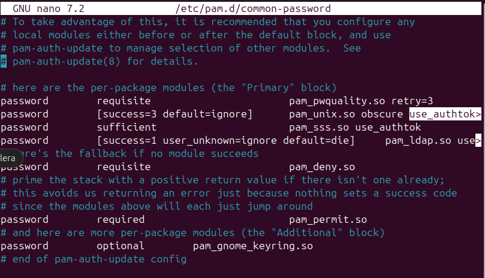
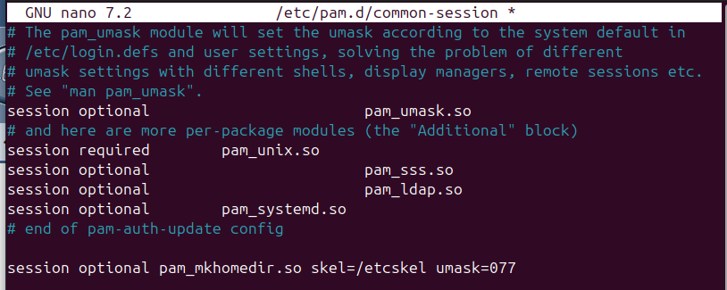
Com podem veure al final hem aconseguit connecta el client al servidor LDAP amb l'usuari creat anteriorment
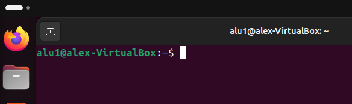
Entorns grafics
En el meu cas he triat LDAP Account Manager (LAM) que és una eina web per gestionar usuaris, grups i permisos en servidors LDAP de manera fàcil i visual.
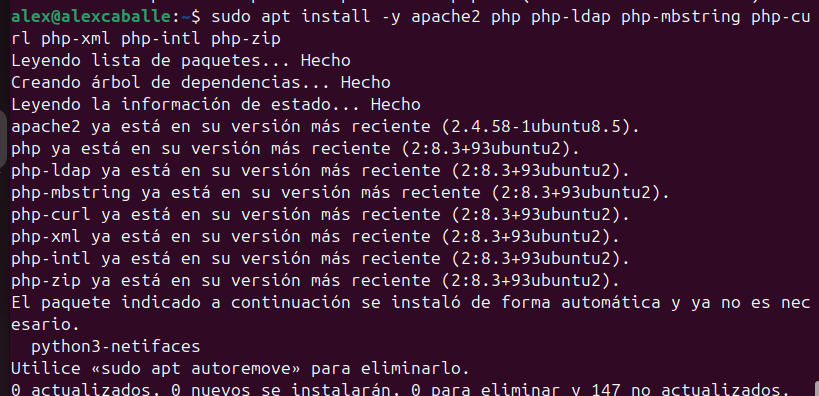
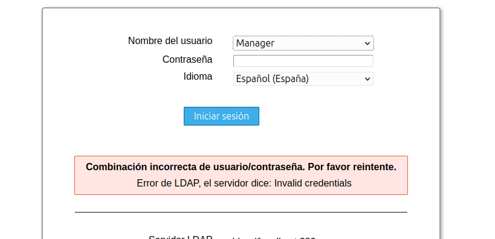
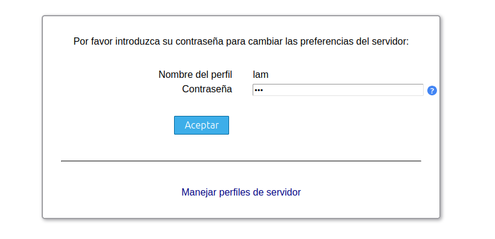
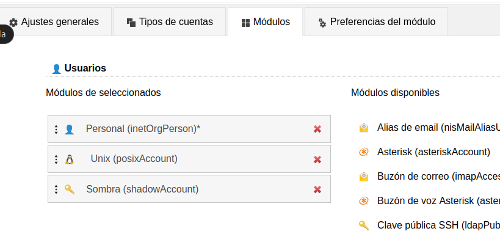
Recursos en xarxa
Els servidors Samba i NFS serveixen per a compartir recursos en xarxa.
- El servidor NFS autentica a nivell de màquina (host) i no d'usuari.
- Permetre autenticació a nivell d'usuari amb NFS és complex i requereix Kerberos.
- Per aquest motiu, és més fàcil utilitzar Samba si es vol control d’accés per usuari.
Servidor SAMBA
Teoria:
El servidor Samba, a diferència del servidor NFS, permet l'autenticació a nivell d'usuari. Permet la compartició de recursos que no són només carpetes, sinó també impressores. Samba pot treballar conjuntament amb LDAP per utilitzar autenticació a nivell d'usuaris. Samba permet la connexió de clients tant de Linux com de Windows.
Instal·lació I Configuració
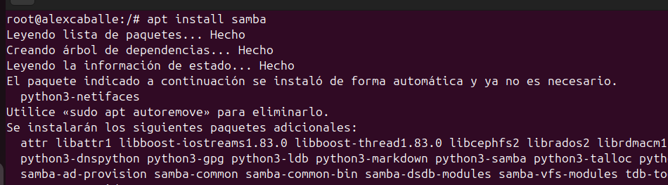
Crearem la carpeta de perfils a l'arrel i li donarem els permisos corresponents 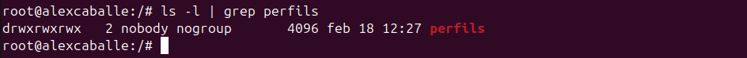
Anirem al fitxe /etc/samba i configurarem la carpeta compartida 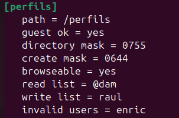
Crea els usuaris raul, enric i walid sense directori personal i sense accés a la línia d'ordres 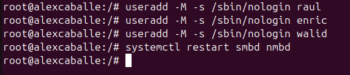
Verifica que els usuaris s'han creat correctament 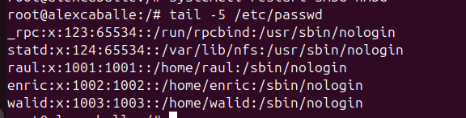
Crem el grup dam i afegim els usuaris raul, walid i enric 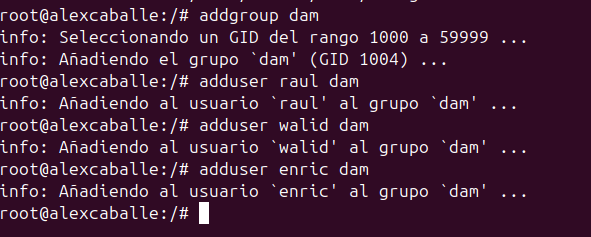
Posarem contrasenyes del samba a els usuaris raul, walid i enric 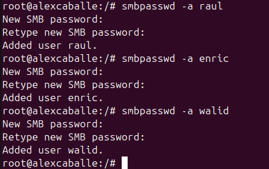
Client: Una vegada al client instal·larem smbclient 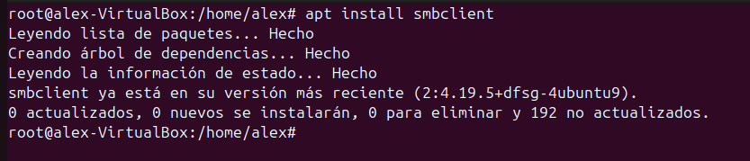
Ens connectarem amb el mode anònim i els diferents usuaris 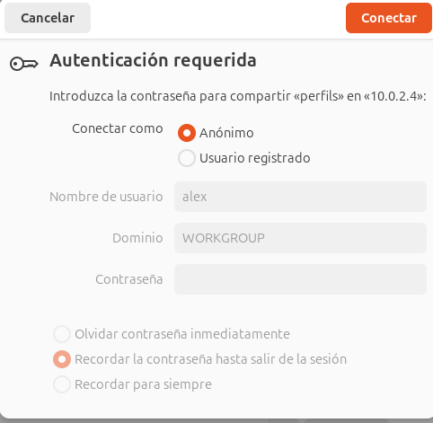
Raul a pogut crea i edita fitches
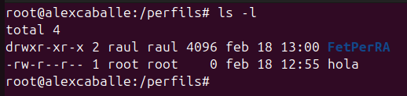
Enric no ja que no tenia el permisos corresponents
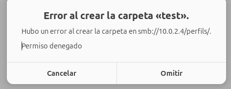
Servidor NFS
Instal·lació I Configuració
Instal·larem el paquet nfs-kernel-server 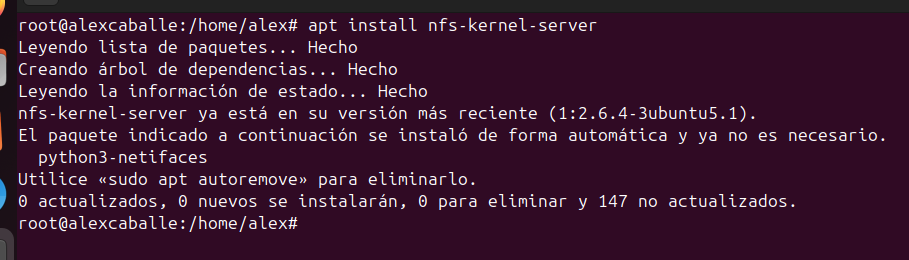
Configuració de /etc/exports
Afigirem una línia de configuració al fitxer /etc/exports:
- /compartida: Directori compartit.
- *: Accés per a qualsevol client de xarxa.
- rw: Permet lectura i escriptura.
- sync: Sincronitza els canvis a disc immediatament.
- no_subtree_check: Millora el rendiment desactivant comprovacions de subdirectoris.
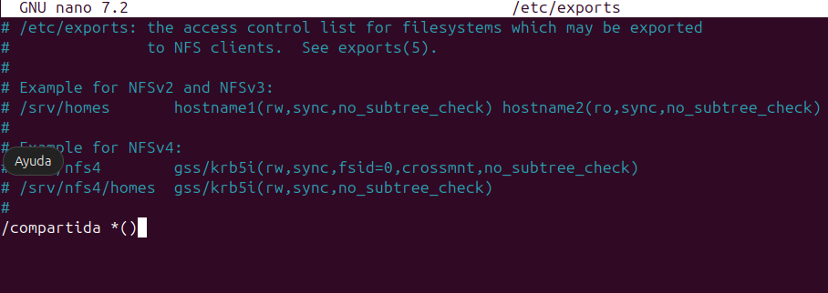
Reiniciem el servei NFS per aplicar els canvis. 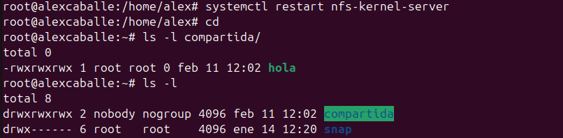
Client Windous
El recurs \10.0.2.4\compartida funciona des del client Windows
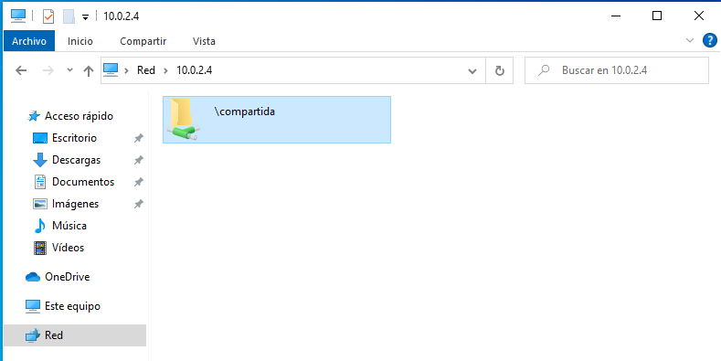
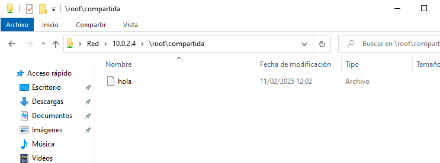
Client Ubuntu
Al client ubuntu necessitarem insta-la el paquet nfs-common i rpcbind
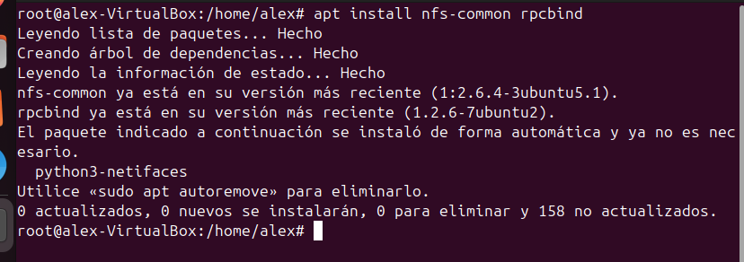

Perfils mòbils
Instal·larem el paquet nfs-kernel-server 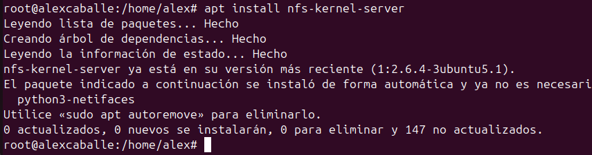
Afegirem la configuracio de perfils
- rw: Accés de lectura i escriptura.
- sync: Escriu els canvis immediatament al disc.
- no_root_squash: Permet que el client NFS accedeixi com a root al servidor (compte amb la seguretat!).
- no_subtree_check: Millora el rendiment desactivant comprovacions de subdirectoris.
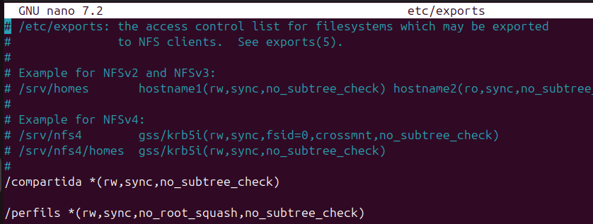
Configuracio del grup 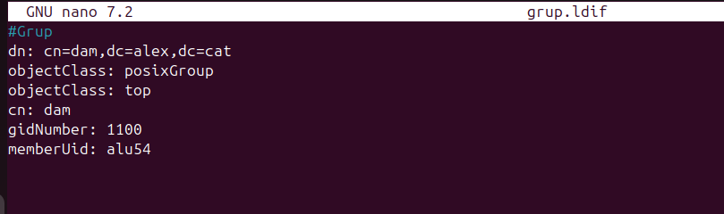
Configuracio del usuari
Afegirem els fitxes usu i grup a LDAP:
Client: Al client instal·larem nfs-common i rpcbind
Muntarem un recurs el qual:
- 10.0.2.4:/perfils: Indica el servidor NFS (IP) i el directori compartit.
- /perfils: Punt de muntatge local on es veurà el recurs compartit.
- nfs: Tipus de sistema de fitxers (NFS).
- auto: Es munta automàticament en arrencar el sistema.
- noatime: No actualitza la data d'accés als fitxers (millora el rendiment).
- nolock: Desactiva el bloqueig de fitxers NFS (útil per compatibilitat).
- bg: Si el muntatge falla, ho intenta en segon pla (no bloqueja l'arrencada).
- nfsvers=3: Utilitza la versió 3 de NFS.
- intr: Permet interrompre operacions NFS si el servidor no respon.
- tcp: Utilitza el protocol TCP per a la comunicació (més fiable que UDP).
- actimeo=1800: Cacheja els atributs de fitxers durant 1800 segons (30 minuts) per millorar el rendiment.
- 0 0: No es fa còpia de seguretat amb dump i no es comprova el sistema de fitxers amb fsck.
Comprovacio amb client ubuntu